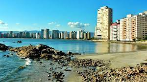
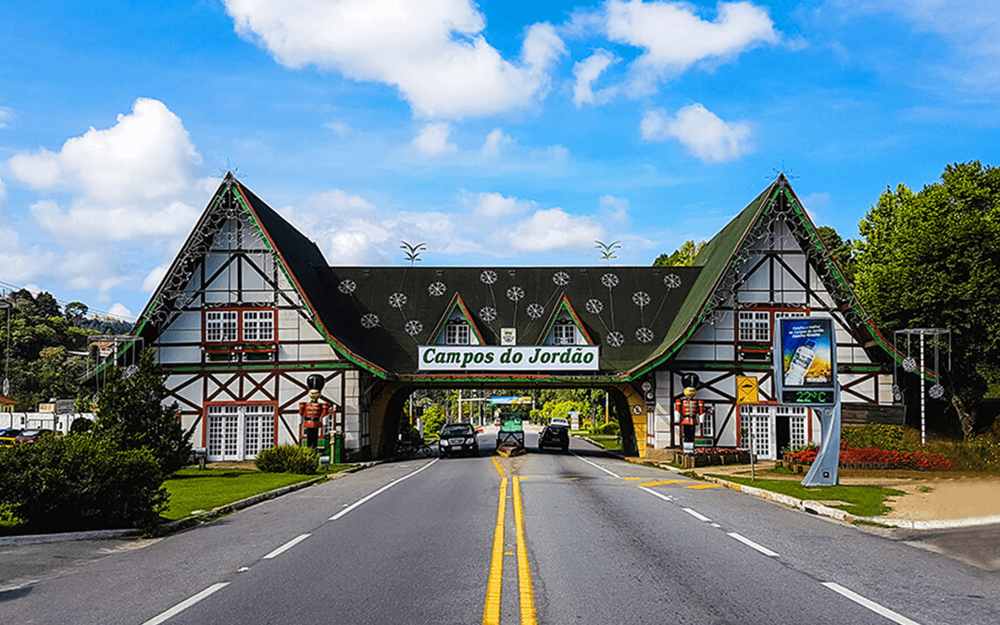
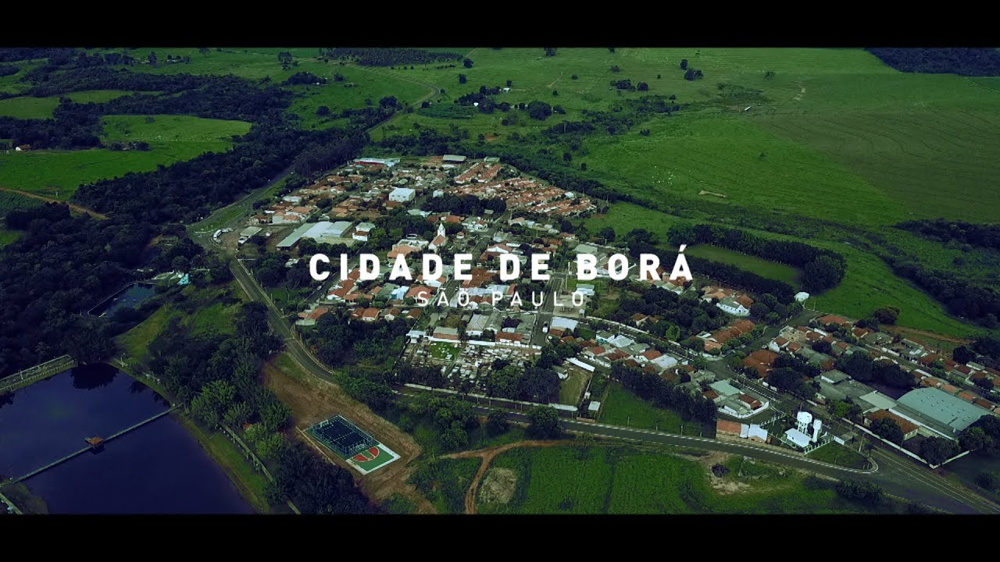

Curiosidades

Cidade mais antiga do Brasil: A cidade mais antiga do Brasil é São Vicente, no litoral paulista. A expedição portuguesa de Gaspar de Lemos chegou à Ilha de Gohayó no dia 22 de janeiro de 1502 e, por ser dia de São Sebastião, passou a chamar o local pelo nome do santo. Exatamente 30 anos depois, no dia 22 de janeiro de 1532, o navegador Martim Afonso de Sousa, enviado pela Coroa Portuguesa, chegou a São Vicente para construir a primeira vila do Brasil. Católico fervoroso, Martim Afonso fundou a cidade, e a batizou de São Vicente.

Cidade mais alta do Brasil: Campos do Jordão, que fica a 1.628 metros acima do nível do mar, é a cidade mais alta do Brasil. Em segundo lugar vem a Vila Monte Verde, em Minas Gerais, com 1.600 metros de altitude.

Menor cidade do Brasil: A maior e a menor cidade do Brasil ficam em São Paulo. A maior é a capital paulista. A menor é Borá, no interior do estado. Lá moram 834 pessoas, população cinco vezes menor do que a que habita o edifício Copan, no centro da cidade de São Paulo. A cidade tem uma área de 118 km².